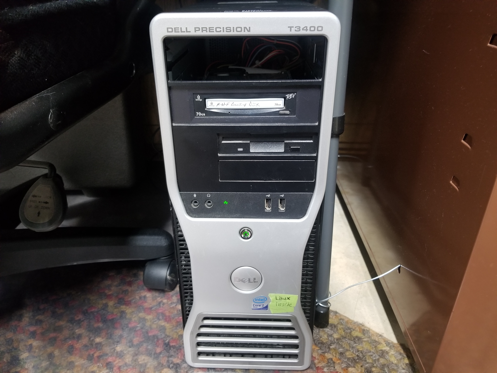
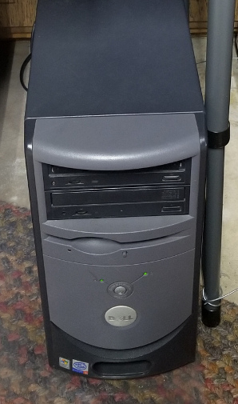

This is a website that I sat up at home with a computer, completely at home, to serve up games for school & fun.
This is the current server I am using as of January 2019. It has an Intel Core 2 Duo, 2 GB of RAM, and it runs Ubuntu Server. 
Here is the original server which I used from October 2018 to December 2018. This machine only had an Intel Pentium 4, 1.5 GB of RAM, and (surprisingly) the newest version of Ubuntu Server. 
Here is another image of the old server before I cleaned it:

If you would like to make any suggestions about the website,
please contact me in person or by email at xxmu8lxx@gmail.com